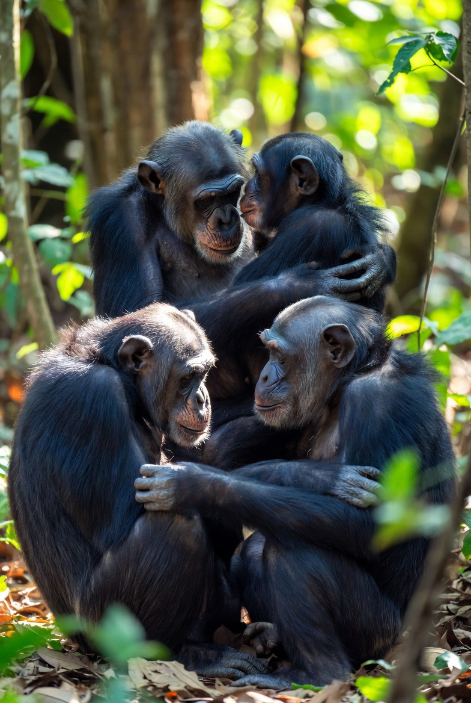
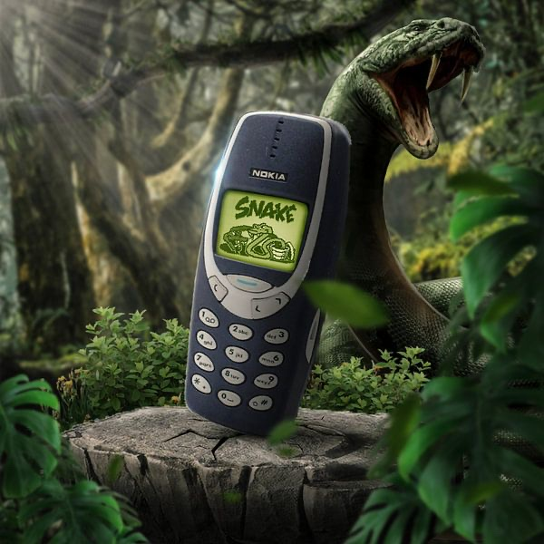

The Algorithm That Ate Your Tribe
Analysis | Echo Truth Hub | February 2026 | ~12 min read
There is a 2024 EEG study that should be bigger news than it is.
Forty-eight young adults sat in a lab at Zhejiang University while researchers measured their brainwaves. The participants completed a questionnaire measuring their tendency toward short-form video addiction, TikTok, Reels, Shorts, then wore EEG caps while their attention was tested. The finding was direct: the higher a person scored on short-video addiction tendency, the lower their frontal theta activity during executive control tasks (r = −0.395, p = 0.007). That's the prefrontal cortex, the region responsible for focus, impulse control, planning, and self-regulation, measurably underperforming in heavy short-form video users.
The researchers concluded plainly: "An increased tendency toward mobile phone short video addiction could negatively impact self-control and diminish executive control within the realm of attentional functions."
It was published in Frontiers in Human Neuroscience (Yan et al., 2024). Peer-reviewed. Openly available. Nicholas Fabiano, MD posted it on X. The response? Mostly people scrolling past it, between Reels.
You genuinely cannot make this up.
But the neuroscience of attention is only one thread of a much larger, older, and more unsettling story. The deeper question is not just what short-form video is doing to our ability to focus. It is what the entire architecture of algorithmic social media is doing to something far more ancient and fundamental: our capacity for genuine human connection. And to answer that question properly, we have to start not with an app, but with a savannah.
We Were Built for the Tribe, and the Tribe Was Small
Homo sapiens did not survive ice ages, predators, and scarcity because we were fast or strong. A lion is faster. A gorilla is stronger. A crocodile was here before us and will probably be here after. We survived because we are extraordinarily good at coordinating in groups, reading each other, trusting each other, building coalitions, and functioning as a social unit under pressure.
For hundreds of thousands of years, belonging to a tribe was not a lifestyle preference. It was the difference between eating and not eating. Between having someone watch your back while you slept and waking up as something else's breakfast. Being excluded meant death, literal, not metaphorical. Being accepted meant safety, reproduction, and the continuation of your bloodline.
This is why social rejection activates the same neural pain pathways as physical injury. Why eye contact triggers oxytocin release, the neurochemical of trust and cooperative behaviour. Why a genuine laugh shared in person lands in the body differently than "lol" on a screen. Our brains are not modern devices running ancient software. They are the ancient software, extraordinarily fine-tuned for the physical, embodied, high-stakes world of small-group tribal life.
And here's the critical detail that most social media conversations skip entirely: the tribe was small.
Anthropologist Robin Dunbar figured this out by studying primate brains, specifically the relationship between neocortex size and average social group size across species. Humans landed at approximately 150 as the cognitive limit for stable, meaningful social relationships. Not 150,000. Not 10,000. One hundred and fifty people, roughly the number you could greet by name, catch up with meaningfully, and whose lives you could genuinely track.
But Dunbar's number isn't a flat 150. It operates as concentric circles of intimacy:
Every relationship outside that 150 is, neurologically speaking, an acquaintance at best. Your brain simply cannot sustain the cognitive overhead of genuine social tracking beyond that ceiling. It doesn't have the RAM.
The Counterfeit Tribe
What social media built, deliberately, architecturally, with full knowledge of the neurochemistry involved, is what might fairly be called the counterfeit tribe: a digitally simulated experience of belonging that delivers just enough reward to sustain engagement, while systematically failing to provide what the human organism actually requires.
In-person social contact releases a complex cocktail of oxytocin, serotonin, dopamine, and endorphins. Real eye contact alone triggers measurable oxytocin release. The physical proximity of a trusted person activates the parasympathetic nervous system, reducing cortisol, calming the threat response, signalling safety in ways that screen contact demonstrably cannot replicate. These are not metaphors for connection. They are connection, the full-bandwidth biological version, refined over millions of years.
Social media delivers a partial signal. The dopamine hit of a like. The recognition of a reply. The simulated tribal affirmation of a share. Without the oxytocin. Without the eye contact. Without the physical presence that tells your nervous system, at the deepest level, I am not alone.
It is, in other words, a meal that looks exactly like food but provides no nutrition. You feel temporarily satisfied. Then you come back, hungrier than before. Then you scroll again. This is not a bug. It is the product.
There is a second mechanism layered on top of this, arguably more insidious: herd mentality. The tendency to mimic the actions of a larger group, often overriding personal judgment, because we assume at a deep evolutionary level that the crowd must be right. In a genuine tribe of 150, the crowd usually was right. If everyone in your band was running, you ran. Stopping to evaluate the evidence was a predator's opportunity.
The algorithm weaponises this ancient heuristic with surgical precision. The trending tab is not a neutral reflection of what people are watching. It is engineered social proof, a manufactured crowd signal designed to trigger herd behaviour at scale. Studies find that 63% of streaming decisions are influenced by what others appear to be watching. The queue is long, so the show must be good. The post has 2.3 million likes, so it must be true. The bandwagon effect, where popularity alone substitutes for validity, is not a glitch in human social wiring. It is a feature. One that evolved for a world of 150 people, now running in a world of 8 billion algorithmically connected ones, being actively exploited by a machine with no interest in whether the judgment is correct.
The people caught in this loop are not stupid. They are running ancient, well-calibrated social software in an environment it was never designed for. Which is precisely the problem.
Sean Parker, Facebook's founding president, not exactly a neutral observer, admitted as much publicly in 2017. The platforms were designed from the outset to give users dopamine hits through social-validation feedback loops. His words: they deliberately exploited "a vulnerability in human psychology." The architects knew. They built it anyway. And then they sent their own children to schools with no phones.
Fast forward to February 18, 2026. Mark Zuckerberg testified under oath before a jury in Los Angeles Superior Court, the first time in history he has faced a jury, and maintained that the existing body of scientific work has not proved that social media causes mental health harms. Internal documents introduced at the same trial told a different story: a 2020 Meta document showed that 11-year-olds were four times as likely to keep returning to its apps as older users; a strategy document explicitly stated "if we want to win big with teens, we must bring them in as tweens"; and 4 million children under the age of 13 were documented using the platform in the US alone. Instagram CEO Adam Mosseri testified the week prior that he does not believe social media can be clinically addictive. Legal experts have described the case, a bellwether for 1,600 pending lawsuits from families and school districts, as the social media industry's Big Tobacco moment. The architects still know. They are still building it anyway.
MIT psychologist Sherry Turkle has spent her career documenting what this does to us. In Alone Together and subsequent work, she describes a generation increasingly losing the capacity for deep, patient, vulnerable, face-to-face conversation, the kind where you can't edit your response, can't disappear mid-sentence, can't perform a curated version of yourself. Real conversation requires tolerance of pauses, ambiguity, and the occasional awkward silence that turns out to be where intimacy lives. Screens let us manage, edit, and retreat. We are training ourselves out of the discomfort that genuine connection requires, and calling it progress.
150 People, 10,000 Followers, and the Mathematics of Loneliness
Social media's core offer is scale. More connections. More reach. More relationships. The implicit promise is that more is better, that expanding your network to thousands or millions of people is an upgrade on the cognitive limit of 150. It is, in fact, the opposite.
Flooding your social environment beyond the Dunbar ceiling doesn't enhance your tribal experience. It degrades it. Your brain cannot track 10,000 people meaningfully. What it does instead, under constant pressure from a feed algorithmically optimised to maximise surface-level engagement, is spread its social processing capacity thin across thousands of shallow signals, while the genuine 5, the 15, the 50 go underserved.
Meta-analyses consistently link problematic social media use to higher loneliness, with correlation coefficients ranging from r ~0.21 to 0.41 in student populations. Hunt et al.'s 2018 randomised controlled trial found that limiting social media to 30 minutes per day reduced both loneliness and depression significantly within three weeks. Not months. Three weeks.
We can have more "connections" than any human being in history while being measurably lonelier than our grandparents, who knew their 150, knew them well, and met them in person regularly. The tribe was never supposed to be infinite. The algorithm made it infinite, and charged you your attention, your sleep, your mental health, and your capacity for real intimacy as the price of admission.
The Great Rewiring, and Who Paid the Price
Psychologist Jonathan Haidt, in The Anxious Generation (2024), documents a sharp inflection point around 2012,2013, when smartphone adoption in teenagers crossed a critical threshold and coincided with a near-simultaneous rise in adolescent anxiety, depression, and self-harm rates across multiple countries. Not one country. Not one demographic. A global signal, consistent across the US, UK, Canada, Australia, and beyond, affecting girls most acutely, corresponding precisely to the transition from phone-supplemented to phone-first social life.
The mechanism Haidt identifies is displacement. Smartphones didn't add a new activity to teenagers' lives. They crowded out what was already there: unstructured in-person play, boredom with nowhere to go, the slow accumulation of face-to-face social risk that builds confidence, empathy, and resilience. Jean Twenge's longitudinal data tells the same story: pre-2010, mental health indicators for adolescents were stable. Post-2010, they are not.
Physical interaction is not simply one option among many for meeting social needs. It is the primary channel through which humans develop the social competencies that allow them to function in real relationships, reading nonverbal cues, tolerating ambiguity, managing the anxiety of genuine vulnerability. When screen time crowds out face time, those skills don't plateau. They atrophy. And they atrophy precisely in the developmental windows when they were supposed to be built.
The Male Perspective: When the Hunt Gets Replaced by the Scroll
Watch a group of young children playing without supervision for twenty minutes. The girls will often be together, talking, organising, negotiating social dynamics, maintaining the relational fabric of the group. The boys will typically be elsewhere, doing something physical and at least moderately dangerous, testing each other through rough-and-tumble play, establishing hierarchies through action. This is not a cultural accident. It is ancient, cross-cultural, and thoroughly documented.
Research involving 112,000 participants confirmed that boys and men are far more likely than girls and women to engage in physical competition and sports spontaneously, outside organised, institutional settings. The sex difference is not primarily socialised. It is wired. University of California Davis research identified testosterone as the key driver of gender-based differences in social stress responses: testosterone during puberty dampens the amygdala's threat response, making males less sensitive to social pressure and more oriented toward physical approach, challenge, and competition.
In plain terms: testosterone makes men less susceptible to social approval loops. Which should, theoretically, make men more resistant to the social media trap. And in some ways it does. Men are less likely to develop the acute social comparison anxiety that visual platforms inflict on girls. They are, in general, more easily bored by passive social performance.
The problem is that the platforms found the back door anyway. Gaming. Status hierarchies among creators. Competition metrics. The male tendency toward mission-oriented obsession, channelled into algorithmic rabbit holes. And critically, the simple fact of displacement. Every hour a young man spends passively in the digital world is an hour not spent doing the physical, risk-taking, achievement-oriented things through which masculine competence, confidence, and genuine peer trust are built.
Male bonding is not built primarily through conversation. It is built through shared physical experience, the trust forged by training together, building something together, surviving something together. The kind of trust that doesn't need to be articulated because it was earned. Social media offers none of that. It offers performance without stakes. Status without achievement. Tribe without the shared hunt.
Social media rewards performance of identity over demonstration of capacity. The result is a generation of young men whose physical and competitive energies have no healthy outlet, more isolated than any previous male generation, being offered as a substitute for genuine masculine social life the simulacrum of connection on a 6-inch screen. That is not an upgrade. It is a slow hollowing out, performed with consent, in exchange for free content.
The Mirror in the Forest: What Our Closest Relatives Tell Us
Chimpanzees and bonobos share approximately 98,99% of our DNA. The evolutionary split between their lineage and ours occurred around eight million years ago, a heartbeat in geological time. They are not metaphors for human nature. They are the closest empirical window we have into it.
Frans de Waal spent his career staring through that window. The two species, despite identical genetic proximity to us, solve the fundamental problem of social life in almost opposite ways.
Chimpanzees rely on aggression to solve problems. Their social structure is male-dominated and hierarchical, with rank established through competition, coalition-building, and controlled violence. Status is earned and maintained through demonstrated power. Intergroup contact means conflict. The male alliances are political, tactical, and ruthless, which is why de Waal's Chimpanzee Politics (1982) was required reading for the US Congress. Sound familiar?
Bonobos are something else entirely. Female-dominated, peaceful, and, this is the scientific term, exceptionally enthusiastic about physical contact as a social tool. De Waal called them "the hippies of the primate world." Where chimps meet rival groups with aggression, bonobos meet them with grooming, play, and physical affection. Tension arises; it is dissolved through touch rather than force.
De Waal's central argument: humans contain both. We have the chimpanzee's hierarchy, dominance drive, and intergroup aggression. We have the bonobo's empathy, tolerance, and capacity for physical reconciliation. Both repertoires are in us. Both are activated or suppressed by our social environments.
Now consider what social media specifically activates, and suppresses.
The platforms structurally reward chimpanzee behaviours in their most amplified form: status competition, coalition formation against out-groups, dominance signalling, and tribal aggression, stripped of every biological mechanism that normally keeps these behaviours in check. A chimpanzee alpha who oversteps suffers real, immediate, physical consequences from coalition rivals. An X user faces none. The aggression is amplified; the moderating feedback loops of embodied social life are absent.
Meanwhile, the bonobo repertoire, the one we arguably need most, is systematically eliminated. Touch. Physical presence. Shared laughter in the same room. The oxytocin of real reconciliation. You cannot groom someone through a screen. You cannot resolve genuine tension with a fire emoji.
What we are left with is the worst of both species and the best of neither: the chimpanzee's aggression without its physical accountability, the bonobo's need for connection without its biological fulfilment.
De Waal put it plainly before his death: "Socially and emotionally we are basically the same as the other primates." The technology has changed. The underlying animal has not.
A Map, Not the Territory: The Western Lens
Before going further, something needs to be said plainly: this is a Western map.
The research cited in this piece was conducted primarily in North America, Western Europe, China, and Australia. The populations studied are largely urban, largely connected, largely living in individualistic, high-smartphone-penetration societies where the displacement of in-person social life by screens is a documented reality. That is not the whole world.
In strongly collectivist societies, much of West Africa, South and Southeast Asia, parts of Latin America, communal in-person social structures are denser, more resilient, and have not yet been displaced to the same degree. The extended family is still a daily reality. The displacement mechanism Haidt describes may be slower where the thing being displaced is more deeply embedded.
In developing economies where smartphones represent the first access to the internet, not a replacement for something richer, the dynamic is different again. The Dunbar number holds everywhere, brain architecture does not change with GDP. But the social consequences of heavy use are relative: most acute where the technology has most thoroughly replaced the alternative.
The dumbphone revival, which we will get to, is almost exclusively a wealthy Western phenomenon. Which itself tells you something: opting out is a luxury. In a township in Johannesburg or a rural village in Indonesia, the smartphone may be the primary tool of economic participation. Removing it is not an option. Managing it is the only play.
The honest framing: this piece describes the sharp end of a spectrum. The technology moves faster than any culture's ability to absorb it safely. And it moves toward everyone, regardless of whether they were ready.
Fire or Wildfire: Technology, Risk, and the Speed Problem
Here is the observation that cuts to the heart of this: technology is a fast-moving threat and a fast-moving opportunity. The ailment is slow when it is respected. The damage is rapid when safety is ignored in the race to advance.
This is not new. Every transformative technology in human history arrived before the framework for managing it did. Fire got out of hand before humans developed fire management. The printing press enabled both the Reformation and the burning of heretics. Nuclear energy arrived before nuclear governance. Social media arrived before anyone had the faintest idea what it was doing to adolescent brains, and the people building it either didn't know or didn't care, because the money was arriving much faster than the research.
The asymmetry is the problem. Platform deployment is fast. The science of its impact is slow, EEG studies, meta-analyses, longitudinal cohorts take years. Regulatory frameworks are slower still. And the human cost accumulates in the gap.
But intellectual honesty requires a counterweight: risk and discomfort must be taken if you want to grow. The printing press was destabilising. The telephone was disorienting. Framing all technological disruption as damage is its own kind of cognitive failure. The question is not whether to accept risk. It is whether the risk is being taken consciously, with genuine intent to course-correct when the harm becomes visible.
Every genuinely useful technology in human history has been additive to the bios, to the living, breathing, socially embedded organism that we are. Fire extended warmth without replacing physical proximity. The printing press democratised knowledge without demanding that humans stop arguing in person. The telephone extended the reach of voice without dismantling the embodied world it supplemented.
The current architecture of algorithmic social media does something categorically different. It does not extend human social life. It substitutes for it, while delivering just enough of the neurochemical signal of connection to prevent the user from clearly perceiving the deficit. It is a prosthetic for social experience that, like a prosthetic limb preventing the remaining muscles from developing, atrophies the biological capacity it claims to replace. The technology is extraordinary. The relationship to it is the problem.
The Governance Question: Bans, Bonobos, and Dumb Phones
The instinct of governments facing this problem is to regulate. Australia banned social media for under-16s. Various US states have pushed age limits and time restrictions. The impulse is understandable, the evidence of harm is real. But the research suggests that government bans, as a primary solution, face a fundamental limitation: social media bans and severe restrictions offer little measurable improvement in addressing these challenges, and they neglect the genuine positive experiences that platforms can also provide.
There is also a philosophical problem worth naming. Democracy, and yes, there are other forms of government, unfortunately democracy remains the least bad of them, though one wonders why we haven't evolved it further (and no, not the WEF's new world order creating more villains than there are available secret agents with a double-0 designation, but that's a different piece), government is one of the abstractions humans built to coordinate social life at scales impossible for direct physical accountability. At its best it is oriented toward human flourishing. But it is also, inevitably, a blunt instrument applied by people who are themselves scrolling between legislation.
The distinctly human answer to this problem is not external constraint. It is the exercise of the very capacity being eroded: the prefrontal cortex's ability to model consequences, weigh values, and choose differently. The irony is precise: the very brain region most degraded by short-form video addiction is the one we need to regulate our relationship with short-form video. Which is why protecting it, especially in developing children and adolescents, is not a lifestyle preference. It is the foundation of human agency.
And something interesting is happening. The organism, without being told to, is starting to self-correct.
The dumbphone is making a comeback. Not among technophobes. Among Gen Z. A 2024 BePresent Digital Wellness Report found that 83% of Gen Z describe their smartphone relationship as unhealthy. Morning Consult (2024) found 28% of Gen Z actively interested in switching to basic feature phones. A 2025 study from the University of British Columbia and UT Austin, published in PNAS Nexus (Ward et al., 2025), found that blocking mobile internet access for two weeks improved mental health in 71% of participants, with attention span gains equivalent to reversing ten years of age-related cognitive decline. Some benefits persisted even after internet access was restored.
The CNA Insider ran a ten-day experiment with Gen Z teenagers on dumbphones. Less procrastination. Better sleep. An uncomfortable but genuine rediscovery that boredom, without a phone to fill it, turns out to be where creativity lives. The "Analog 2026" movement, minimalist devices, intentional disconnection, is not mainstream. But it is the leading edge of a corrective impulse that the data says is real and growing.
The psychological tools for this are not complicated, though they require what the algorithm is specifically designed to prevent: deliberate pause. Recognising when you are following crowd signal rather than personal judgment, the trending tab, the long queue, the recommendation everyone seems to be watching, and asking the question that herd behaviour is designed to bypass: what do I actually think? Seeking genuinely opposing views. Justifying choices independently before checking what the group is doing. Aligning decisions with personal values rather than social proof.
These are not revolutionary acts. They are the cognitive habits most directly targeted by an engagement-maximisation system that profits from their absence. The contrarian is not always right. But the person who never questions the herd is, statistically, following an algorithm.
The Only Measure That Has Ever Mattered
We are at an early and genuinely dangerous moment in this. The tools are extraordinarily powerful. The science of their biological impact is still emerging, decades after the platforms were already embedded in billions of lives. The economic incentives remain pointed in the wrong direction. The populations most at risk have the least capacity to recognise and act on the harm.
But the argument for despair is not established. The prefrontal cortex is plastic. Social skills atrophy with disuse and rebuild with exercise. The Dunbar relationships, the 5, the 15, the 50, can be rebuilt from the ruins of the infinite feed. The evidence from Hunt's RCT, from Ward et al.'s PNAS Nexus study, from teenagers rediscovering their own minds through a boring phone, is that the organism responds quickly when the signal is cleared.
What the chimp and the bonobo tell us is what we need at the base of the stack. What the Dunbar number tells us is how much of it we can meaningfully sustain. What the EEG data tells us is what we are currently trading it for. And what the dumbphone revival tells us is that enough people are doing the maths, and not liking the answer.
The standard for what technology should be is not technical. It is biological. Not what the platform can do. What the human needs. The bios first, the living system, the embodied animal, the ancient creature that sat around fires in groups of 150, made eye contact across the flames, and built trust through shared physical experience.
Every technology that has genuinely served us has honoured that creature. Extended its reach without severing its roots. Amplified its capacities without replacing them. Kept the fire warm without burning the village down.
That is the only measure that has ever mattered. And it is the one, so far, that the algorithm has been built to ignore.
Sources & Further Reading
The Trial, February 2026
- Zuckerberg testimony, Los Angeles Superior Court, February 18, 2026. NPR coverage: npr.org
- Internal Meta documents (11-year-olds, tweens strategy, 4 million underage users). CNBC: cnbc.com
- Mosseri testimony (social media "not clinically addictive"), bellwether trial context. CNN: cnn.com
Neuroscience & Attention
- Yan T, Su C, Xue W, Hu Y, Zhou H (2024). Mobile phone short video use negatively impacts attention functions: an EEG study. Frontiers in Human Neuroscience.
doi.org/10.3389/fnhum.2024.1383913 | PMC11236742 - Nguyen et al. (2025). Short-form video use, cognition & mental health meta-analysis (~98,000 participants). Psychological Bulletin (APA).
psycnet.apa.org
Social Displacement & Mental Health
- Haidt, J. (2024). The Anxious Generation. jonathanhaidt.com
- Turkle, S. (2011). Alone Together. TED Talk: ted.com
- Hunt M et al. (2018). No More FOMO: Limiting Social Media Decreases Loneliness and Depression. Journal of Social and Clinical Psychology.
- APA (2024). Health Advisory on Social Media Use in Adolescence. apa.org
Herd Mentality & Social Proof
- Herd mentality: wikipedia.org/wiki/Herd_mentality
- Bandwagon effect (Forbes): forbes.com
- Overcoming herd mentality (INSEAD): knowledge.insead.edu
- Binge-watching & social proof (63% stat): moldstud.com
Dunbar's Number
- Dunbar, R. (1992). Original neocortex/group size paper. Journal of Human Evolution.
- Wikipedia overview: wikipedia.org/wiki/Dunbar's_number
- Concentric circles explained: pasadenavillage.org
Sex Differences & Male Social Behaviour
- Deaner RO, Geary DC et al. (2012). A Sex Difference in the Predisposition for Physical Competition. PLoS ONE. PMC3498324
- UC Davis / Trainor Lab (2023). Testosterone and gender-based social stress response. PNAS. ucdavis.edu
- Twenge J, Haidt J et al. (2020). Underestimating digital media harm. Nature Human Behaviour. jonathanhaidt.com/social-media
Primate Social Structures
- de Waal, Frans B.M. (1982). Chimpanzee Politics. Johns Hopkins University Press.
- de Waal, Frans B.M. (2005). Our Inner Ape. Riverhead Books.
- de Waal, Frans B.M. (1995). "Bonobo Sex and Society." Scientific American. scientificamerican.com
Governance, Self-Regulation & The Dumbphone Revival
- PMC (2024). Social media bans vs. self-directed emotion regulation. PMC11554337
- Ward A et al. (2025). Blocking mobile internet improves sustained attention, mental health, and well-being. PNAS Nexus. academic.oup.com | PMC11834938
- BePresent (2024). Digital Wellness Report. bepresentapp.com
- Morning Consult (2024). Gen Z & dumbphone interest. morningconsult.com
- CNA Insider — Gen Z teens, 10 days on dumbphones (YouTube): youtube.com